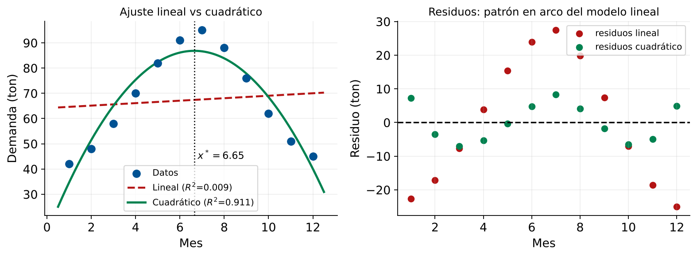

Regresión Cuadrática y Modelos No Lineales
Identificar Comportamientos No Lineales en Logística
Módulo 5 — Regresión y Análisis de Datos
Matemáticas 2 — Clase 25
Cátedra de Matemáticas 2
Ingeniería en Logística
Clase 25
Contenidos de la Clase
- Objetivos de Aprendizaje
- Fenómenos No Lineales en Logística
- Modelo Cuadrático: Definición
- Interpretación de los Coeficientes Cuadráticos
- Cuándo Cambiar de Lineal a Cuadrático
- Datos: Demanda Estacional de Envíos
- Ajuste Cuadrático: Cálculo Paso a Paso
- Comparación: Lineal vs Cuadrático
- Imagen: Ajuste Cuadrático sobre los Datos
- MATLAB: Ajuste Polinomial de Grado 2
- MATLAB: Comparar y Visualizar
- MATLAB: Predicción y Punto Óptimo
- Grado 3 y Superior: Cuándo y Cómo
- El Peligro del Sobreajuste Polinomial
- Caso: Costo de Almacenamiento vs Nivel de Inventario
- MATLAB: Encontrar el Nivel Máximo de Inventario
- Resumen: Lineal vs Cuadrático
- Punto de Decisión
- Tarea para la Clase 26
- Referencias
Objetivos de Aprendizaje
Al finalizar esta clase el estudiante será capaz de:
- Identificar cuándo un modelo lineal es insuficiente usando el gráfico de residuos.
- Formular el modelo de regresión cuadrática \(\hat y = \beta_0 + \beta_1 x + \beta_2 x^2\).
- Ajustar modelos de grado 1 y 2 con
polyfit(x,y,2) en MATLAB.
- Visualizar y comparar curvas ajustadas con los datos reales.
- Decidir cuándo cambiar de modelo lineal a cuadrático (o superior).
Conexión con Clase 24
Clase 24: en el gráfico de residuos, patrón curvo en U = modelo lineal insuficiente.
Clase 25: cómo resolver ese problema con regresión cuadrática.
Fenómenos No Lineales en Logística
La realidad logística tiene muchos comportamientos curvos
- Demanda estacional (picos de Navidad, verano)
- Costo de almacenamiento: sube lento al inicio, muy rápido al llenarse
- Curva de aprendizaje: primeras unidades son lentas, luego se acelera
- Consumo de combustible vs velocidad: mínimo a velocidad óptima
- Costo de ruptura de stock: cero cuando hay inventario, catastrófico cuando se agota
La recta no captura la curvatura. Necesitamos un modelo de grado 2.
Modelo Cuadrático: Definición
Modelo polinomial de grado 2
\[ \hat y = \beta_0 + \beta_1 x + \beta_2 x^2 \]
Tres coeficientes: intercepto, término lineal y término cuadrático.
Es un caso especial de regresión múltiple.
Definiendo \(x_1 = x\) y \(x_2 = x^2\):
\[ \hat y = \beta_0 + \beta_1 x_1 + \beta_2 x_2 \]
La matriz de diseño es:
\[ \mathbf{X} = \begin{pmatrix} 1 & x_1 & x_1^2 \\ 1 & x_2 & x_2^2 \\ \vdots & \vdots & \vdots \\ 1 & x_n & x_n^2 \end{pmatrix} \]
Y se resuelve con las mismas ecuaciones normales \(\hat{\boldsymbol{\beta}} = (\mathbf{X}^T\mathbf{X})^{-1}\mathbf{X}^T\mathbf{y}\).
Interpretación de los Coeficientes Cuadráticos
\[ \hat y = \hat\beta_0 + \hat\beta_1 x + \hat\beta_2 x^2 \]
Coeficientes
- \(\hat\beta_0\) (intercepto): valor de \(\hat y\) cuando \(x=0\).
- \(\hat\beta_1\) (término lineal): tasa de cambio inicial.
- \(\hat\beta_2\) (término cuadrático): curvatura de la función.
- \(\hat\beta_2 > 0\): curva en U (mínimo en algún punto)
- \(\hat\beta_2 < 0\): curva en arco (máximo en algún punto)
Punto óptimo: El máximo/mínimo se alcanza en \(x^* = -\hat\beta_1 / (2\hat\beta_2)\).
Cuándo Cambiar de Lineal a Cuadrático
Señales de que el modelo lineal es insuficiente
- Gráfico de residuos muestra patrón en U o arco
- Los datos tienen forma visualmente curva
- El RMSE del modelo cuadrático es mucho menor
- \(R^2_\text{adj}\) sube al agregar \(x^2\)
- El conocimiento del proceso indica no linealidad
Ejemplos logísticos típicos
- Costo almacén vs ocupación: crece lento al inicio, muy rápido al saturar
- Demanda vs precio: cae rápido con precios altos
- Tiempo entrega vs carga: sube lento al inicio, rápido cerca del límite
- Combustible vs velocidad: mínimo a velocidad óptima (≈80 km/h)
Regla práctica
Si el \(R^2_\text{adj}\) del modelo cuadrático supera en más de 0.02 al del lineal, el término cuadrático aporta información real.
Si la mejora es menor, la curvatura puede deberse al azar.
Datos: Demanda Estacional de Envíos
Una empresa registra la demanda mensual durante 12 meses:
| Mes | \(x\) | \(y\) (ton) | Mes | \(x\) | \(y\) (ton) |
|---|
| Enero | 1 | 42 | Julio | 7 | 95 |
| Feb | 2 | 48 | Agosto | 8 | 88 |
| Marzo | 3 | 58 | Sep | 9 | 76 |
| Abril | 4 | 70 | Octubre | 10 | 62 |
| Mayo | 5 | 82 | Noviembre | 11 | 51 |
| Junio | 6 | 91 | Diciembre | 12 | 45 |
Patrón: la demanda sube de enero a junio/julio y luego baja.
Es un comportamiento cuadrático (arco invertido).
Modelo lineal: insuficiente
El modelo lineal \(\hat y = \beta_0 + \beta_1 x\) no puede capturar este patrón de ida y vuelta.
Necesitamos el modelo cuadrático.
Ajuste Cuadrático: Cálculo Paso a Paso
Datos: \(n=12\), \(x = 1,\ldots,12\), valores de \(y\) dados.
Herramienta: polyfit(x, y, 2) en MATLAB.
Resultado del ajuste cuadrático:
\[ \hat y = 14.59 + 21.73\,x - 1.634\,x^2 \]
Interpretación
- \(\hat\beta_0 = 14.59\): demanda base (extrapolación a \(x=0\))
- \(\hat\beta_1 = 21.73\): tasa inicial de crecimiento mensual
- \(\hat\beta_2 = -1.634\): curvatura negativa (la demanda sube y luego baja)
Punto máximo:
\[ x^* = -\frac{\hat\beta_1}{2\hat\beta_2} = -\frac{21.73}{2\times(-1.634)} \approx 6.65 \;\Rightarrow\; \text{entre junio y julio} \]
Demanda máxima estimada: \(\hat y(6.65)\approx 86.8\) ton. Coincide con los datos: el pico es en mes 6–7. ✓
Comparación: Lineal vs Cuadrático
| Modelo | \(R^2\) | \(R^2_\text{adj}\) | RMSE | MAPE |
|---|
| Lineal (grado 1) | 0.009 | −0.090 | 18.1 ton | 26.5% |
| Cuadrático (grado 2) | 0.911 | 0.892 | 5.4 ton | 8.1% |
Lectura
- El modelo lineal es casi inútil (\(R^2 \approx 0\)): los datos no tienen tendencia lineal.
- El cuadrático explica el 91.1% de la variabilidad con RMSE de 5.4 ton.
- La mejora en \(R^2_\text{adj}\) es de −0.09 (≈ 0) a 0.892: el término \(x^2\) aporta muchísimo.
Conclusión
El modelo cuadrático es claramente superior.
Un MAPE del 8.1% es muy bueno (<10%) para planificación de producción.
Ajuste Cuadrático sobre los Datos

Datos (azul), recta lineal (rojo discontinuo) y parábola ajustada (verde)
Qué buscar en el gráfico
La curva cuadrática debe pasar cerca de todos los puntos.
La recta lineal tiene residuos sistemáticos: negativos en los extremos, positivos en el centro.
Esto confirma que el patrón es cuadrático.
MATLAB: Ajuste Polinomial de Grado 2
% Datos: mes (1-12) y demanda (ton)
x = (1:12)';
y = [42;48;58;70;82;91;95;88;76;62;51;45];
% Ajuste lineal (grado 1)
p1 = polyfit(x, y, 1);
y_hat1 = polyval(p1, x);
% Ajuste cuadratico (grado 2)
p2 = polyfit(x, y, 2);
y_hat2 = polyval(p2, x);
fprintf('=== MODELO LINEAL ===\n')
fprintf('y_hat = %.4f + %.4f*x\n', p1(2), p1(1))
fprintf('\n=== MODELO CUADRATICO ===\n')
fprintf('y_hat = %.4f + %.4f*x + %.4f*x^2\n', p2(3), p2(2), p2(1))
% Punto optimo (maximo o minimo)
x_opt = -p2(2) / (2*p2(1));
y_opt = polyval(p2, x_opt);
fprintf('Punto optimo: x* = %.2f (mes %.0f), y* = %.2f ton\n',...
x_opt, x_opt, y_opt)
Resultado esperado
Lineal: y_hat = 64.1515 + 0.4895*x
Cuadrático: y_hat = 14.5909 + 21.7298*x + -1.6339*x^2
Punto optimo: x* = 6.65 (mes 7), y* = 86.84 ton
MATLAB: Comparar y Visualizar
% Calcular metricas para cada modelo
calcR2 = @(yr,yp) 1 - sum((yr-yp).^2)/sum((yr-mean(yr)).^2);
calcRMSE = @(yr,yp) sqrt(mean((yr-yp).^2));
n = length(x); k1=1; k2=2;
R2_1 = calcR2(y, y_hat1);
R2_2 = calcR2(y, y_hat2);
R2adj_1 = 1-(1-R2_1)*(n-1)/(n-k1-1);
R2adj_2 = 1-(1-R2_2)*(n-1)/(n-k2-1);
fprintf('%-20s %-8s %-10s %-8s\n','Modelo','R^2','R^2_adj','RMSE')
fprintf('%-20s %-8.4f %-10.4f %-8.4f\n','Lineal',R2_1,R2adj_1,calcRMSE(y,y_hat1))
fprintf('%-20s %-8.4f %-10.4f %-8.4f\n','Cuadratico',R2_2,R2adj_2,calcRMSE(y,y_hat2))
% Visualizacion
figure('Position',[50 50 950 420]);
x_fine = linspace(0.5, 12.5, 200)';
subplot(1,2,1)
scatter(x, y, 80, [0 0.45 0.74], 'filled'); hold on
plot(x_fine, polyval(p1,x_fine), 'r--', 'LineWidth',2,'DisplayName','Lineal')
plot(x_fine, polyval(p2,x_fine), 'g-', 'LineWidth',2,'DisplayName','Cuadratico')
xline(x_opt,'k:','LineWidth',1.5)
legend('Datos','Lineal','Cuadratico','Location','south'); grid on
xlabel('Mes'); ylabel('Demanda (ton)'); title('Ajuste lineal vs cuadratico')
subplot(1,2,2)
scatter(y_hat2, y-y_hat2, 70, [0.85 0.33 0.10], 'filled')
yline(0,'k--','LineWidth',1.5)
xlabel('Valores ajustados'); ylabel('Residuos')
title('Residuos del modelo cuadratico'); grid on
MATLAB: Predicción y Punto Óptimo
Salida esperada: mes 13 → 20.95 ton; mes 14 → −1.43; mes 15 → −27.1; … ; polyval(p2,20) = -204.36. La parábola cruza el cero en \(x\approx13.9\): fuera del rango el modelo no es válido.
% Predicciones para meses futuros
meses_pred = [13; 14; 15; 16; 17; 18];
nombres_mes = {'Ene(y2)','Feb(y2)','Mar(y2)','Abr(y2)','May(y2)','Jun(y2)'};
y_pred_fut = polyval(p2, meses_pred);
fprintf('=== PRONOSTICO AÑO SIGUIENTE ===\n')
fprintf('%-12s %-8s %-18s\n','Mes','x','Demanda pred (ton)')
fprintf('%s\n', repmat('-',38,1))
for i = 1:length(meses_pred)
fprintf('%-12s %-8d %-18.2f\n', nombres_mes{i}, meses_pred(i), y_pred_fut(i))
end
% Advertencia de extrapolacion
fprintf('\nATENCION: meses 13-18 estan fuera del rango de datos.\n')
fprintf('El modelo cuadratico puede dar valores negativos para x muy grande.\n')
fprintf('Verificar: polyval(p2, 20) = %.2f ton\n', polyval(p2,20))
fprintf('(Si es negativo, el modelo no es valido para esos meses)\n\n')
% Mes de maxima demanda (util para planificacion de inventario)
fprintf('Mes de maxima demanda: %.1f (entre mes %d y %d)\n',...
x_opt, floor(x_opt), ceil(x_opt))
fprintf('Demanda esperada en el pico: %.2f ton\n', y_opt)
fprintf('Recomendacion: aumentar inventario entre los meses %d y %d\n',...
max(1,floor(x_opt)-1), min(12,ceil(x_opt)+1))
Grado 3 y Superior: Cuándo y Cómo
Modelo cúbico (grado 3)
\[ \hat y = \beta_0 + \beta_1 x + \beta_2 x^2 + \beta_3 x^3 \]
Puede capturar dos cambios de dirección (S-curva).
Útil para curvas de aprendizaje y curvas logísticas de crecimiento.
Regla general para elegir el grado
- Usar el grado mínimo que da un buen ajuste
- \(R^2_\text{adj}\) debe mejorar al subir el grado
- RMSE en datos de prueba debe bajar
- El modelo debe tener sentido físico
Cuando el cuadrático no es suficiente, el cúbico puede capturar la S.
El Peligro del Sobreajuste Polinomial
Sobreajuste
un polinomio de grado muy alto puede pasar exactamente por todos los puntos de entrenamiento pero predecir muy mal datos nuevos.
Ejemplo
con \(n=12\) puntos, un polinomio de grado 11 pasa por todos exactamente (\(R^2=1\)), pero es completamente inútil para predecir.
Criterios para evitar sobreajuste
- Usar \(R^2_\text{adj}\) (penaliza por grado)
- Calcular RMSE en datos de prueba (test)
- Regla práctica: grado \(\leq n/5\) como máximo
- Validar con datos del periodo siguiente
El polinomio de grado alto oscila entre los puntos.
Caso: Costo de Almacenamiento vs Nivel de Inventario
Datos: nivel de inventario (% de capacidad) y costo diario de almacenamiento:
| \(x\) (%) | 10 | 20 | 30 | 40 | 50 | 60 | 70 | 80 | 90 |
|---|
| \(y\) ($) | 85 | 95 | 110 | 130 | 160 | 210 | 290 | 410 | 620 |
|---|
Patrón: el costo crece lentamente al inicio y se dispara cuando el almacén está casi lleno.
Claramente no lineal.
| Modelo | Ecuación | \(R^2\) | RMSE |
|---|
| Lineal | \(\hat y = -59.3 + 5.875\,x\) | 0.806 | $74.4 |
| Cuadrático | \(\hat y = 160.8 - 6.133\,x + 0.1201\,x^2\) | 0.979 | $24.4 |
Decisión operativa
Con el modelo cuadrático, la empresa puede estimar el costo de almacenamiento con precisión de ±$24.4 (RMSE). Si el presupuesto diario es $300, el nivel máximo de inventario se obtiene resolviendo \(0.1201\,x^2 - 6.133\,x + 160.8 = 300\;\Rightarrow\; x \approx 68.1\%\) de la capacidad.
MATLAB: Encontrar el Nivel Máximo de Inventario
% Datos de costo de almacenamiento
x_inv = [10;20;30;40;50;60;70;80;90];
y_cost = [85;95;110;130;160;210;290;410;620];
% Ajuste cuadratico
p_cost = polyfit(x_inv, y_cost, 2);
fprintf('Modelo: y = %.4f + %.4f*x + %.4f*x^2\n',...
p_cost(3), p_cost(2), p_cost(1))
% R^2 y RMSE
y_hat_cost = polyval(p_cost, x_inv);
R2_cost = 1 - sum((y_cost-y_hat_cost).^2)/sum((y_cost-mean(y_cost)).^2);
RMSE_cost = sqrt(mean((y_cost-y_hat_cost).^2));
fprintf('R^2=%.4f, RMSE=$%.4f\n\n', R2_cost, RMSE_cost)
% Nivel maximo para presupuesto de $300/dia
presupuesto = 300;
% Resolver: p_cost(1)*x^2 + p_cost(2)*x + (p_cost(3)-presupuesto) = 0
coefs = [p_cost(1), p_cost(2), p_cost(3)-presupuesto];
raices = roots(coefs);
x_max = raices(raices > 0 & raices < 100); % raiz en rango valido
fprintf('Nivel maximo de inventario para presupuesto $%d/dia:\n', presupuesto)
fprintf(' x_max = %.2f%% de capacidad\n', x_max)
fprintf(' Recomendacion: no superar el %d%% de ocupacion\n', floor(x_max))
Salida esperadaModelo: y = 160.8333 + -6.1326*x + 0.1201*x^2 · R^2=0.9791, RMSE=$24.4278 · x_max = 68.09% de capacidad · no superar el 68% de ocupacion
Resumen: Lineal vs Cuadrático
| Aspecto | Lineal | Cuadrático |
|---|
| Modelo | \(\hat y = \beta_0 + \beta_1 x\) | \(\hat y = \beta_0 + \beta_1 x + \beta_2 x^2\) |
| MATLAB | polyfit(x,y,1) | polyfit(x,y,2) |
| Coeficientes | 2 | 3 |
| Geometría | Recta | Parábola |
| Punto óptimo | No aplica | \(x^* = -\beta_1/(2\beta_2)\) |
| Cuándo usar | Tendencia monótona | Patrón con máximo o mínimo |
| Riesgo | Sesgo si hay curvatura | Sobreajuste con grado alto |
Flujo de decisión para elegir el modelo
- Graficar los datos. ¿Se ve lineal o curvo?
- Ajustar el modelo lineal. Revisar residuos: ¿hay patrón en U?
- Si hay curvatura: ajustar cuadrático y calcular \(R^2_\text{adj}\) y RMSE.
- Si \(R^2_\text{adj}\) mejora > 0.02: usar cuadrático.
- Validar en datos de prueba. Si RMSE test ≈ RMSE train: OK.
Punto de Decisión
Pregunta de Cierre
El modelo cuadrático de demanda da el punto óptimo en el mes 6.5. Para el año siguiente, el modelo predice ≈21 ton en el mes 13 y demanda negativa a partir del mes 14.
¿Usarías el modelo cuadrático para planificar el año 2? ¿Cuándo cambias de modelo y por qué?
Usar cuadrático
Solo dentro del rango ajustado (meses 1–12). Ya en el mes 13 la predicción (21 ton vs 42 ton del enero anterior) no es creíble.
Cambiar de modelo
Para el año 2 completo, usar un modelo con estacionalidad explícita (seno/coseno) o un modelo de series de tiempo.
Regla práctica
Evitar extrapolar fuera del rango observado: una parábola siempre termina en \(\pm\infty\). El cuadrático es válido dentro del rango ajustado.
Tarea para la Clase 26
Lecturas
- Montgomery, Cap. 5: Regresión polinomial — validación y selección
- Montgomery, Cap. 3.3: Criterios de selección de modelos
Ejercicio preparatorio
Con los datos de demanda del script
clase25_regresion_cuadratica.m:
- Ajustar modelos de grado 1, 2 y 3.
- Para cada modelo calcular \(R^2_\text{adj}\) y RMSE en datos de prueba (meses 10-12).
- Graficar los tres ajustes sobre los datos.
- ¿El modelo de grado 3 mejora significativamente al de grado 2?
- Predecir la demanda para los meses 13 y 14. ¿Son razonables?
Próxima clase 26
Comparación de modelos (lineal vs cuadrático) — validación cruzada y selección definitiva
Referencias
- Montgomery, D.C., Peck, E.A. & Vining, G.G. (2012). Introduction to Linear Regression Analysis (5th ed.). Wiley. Cap. 5 (Regresión polinomial), pp. 205–250.
- Lay, D.C., Lay, S.R., McDonald, J.J. (2016). Álgebra Lineal y sus Aplicaciones (5a ed.). Pearson. Cap. 6.5 (Mínimos cuadrados y modelos polinomiales).
- MATLAB Documentation.
polyfit, polyval, roots. https://www.mathworks.com/help/matlab/ref/polyfit.html
- Material propio: Dataset demanda estacional, Script
clase25_regresion_cuadratica.m.
Matemáticas 2 — Clase 25 | Regresión Cuadrática
¡Hasta la próxima clase!
Clase 26: Comparación de Modelos — Validación Cruzada
contacto@mat2logistica.edu